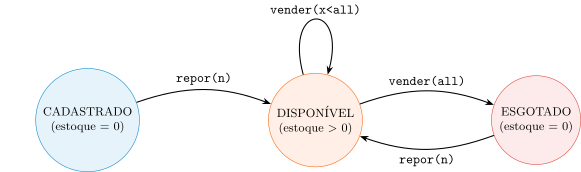

Aula 2 — Programação Orientada a Objetos
2026-08-30
Aula 1 deixou uma pergunta em aberto: o construtor deve consertar um preço negativo, ou recusar o objeto?
Esta aula responde formalizando: um objeto bem projetado é uma máquina de estados finita, protegida pelo construtor e por métodos-transição.
Roteiro: máquina de estados → invariantes → construtor (Fail-Fast) → exceções e identidade.
Regra de ouro: precisar de get para decidir por fora e depois set = o design falhou.
Atributos private (em conjunto) = o estado
Métodos públicos = as transições — as únicas autorizadas
Produto como Máquina de Estados
Invariante: estoque \(\ge 0\), sempre. É o único motivo de a máquina existir.
Se os atributos de um objeto fossem todos public, a máquina de estados continuaria funcionando — só ficaria “mais rápida”? Por quê?
Escreva sua resposta e compare com um colega antes de avançar (2 min).
Dica
Julgue V ou F — a questão só conta se acertar os 4 itens:
estoque público tornaria as transições mais rápidas, sem custo arquitetural.Dica
“No início da iteração \(i\), o subvetor \([0, i-1]\) contém os elementos originais, já ordenados.”
Inicialização → Manutenção → Término: a prova de corretude do algoritmo.
ContaBancaria: saldo + limite \(\ge 0\)Triangulo: \(a+b>c\) (e permutações)Carrinho: total = soma dos itens (propriedade derivada)setTotal(valor)?O total é resultado de adicionar itens, não uma entrada livre — se fosse public, 50 módulos teriam que lembrar de mantê-lo coerente.
Construtor permissivo → Objeto Zumbi: ocupa memória, dados sem sentido, bugs distantes.
Erro comum: if (preco < 0) this.preco = 0.0; — mascarar, não corrigir. O construtor deve recusar, não consertar.
Comando
voidConsulta
Misturar os dois: verificarSaldo() que cobra taxa a cada chamada — “perguntar” deixa de ser seguro.
Pré-condição falha → culpa do chamador. Pós-condição falha → culpa do autor da classe.
Um método getSaldoLiquido() calcula um imposto e, de quebra, atualiza um contador interno de “quantas vezes o saldo foi consultado”. Isso viola algum princípio desta aula?
Escreva sua resposta e compare com um colega antes de avançar (2 min).
Dica
Julgue V ou F — a questão só conta se acertar os 4 itens:
void, sinalizando que sua função é mutar o estado, não devolver dado.Dica
-1 pode ser ignorado. O programa segue rodando com dados já corrompidos.
IllegalArgumentException — culpa da carga (argumento ruim)IllegalStateException — culpa do momento (objeto no estado errado)NullPointerException — via Objects.requireNonNull(...), proativoElevador: Defendendo a TransiçãoRuntimeException (não-checada): erro de contrato é bug de quem chamou — deve quebrar visivelmente, não ser engolido por try-catch.
Para a JVM: objetos diferentes. Para o negócio: mesmo produto (mesmo SKU).
equals() + hashCode()Armazém: hashCode = corredor; equals = etiqueta. Um sem o outro coerente → item “some” num HashSet/HashMap.
Por que reescrever equals() sem reescrever hashCode() junto é mais perigoso do que não reescrever nenhum dos dois?
Escreva sua resposta e compare com um colega antes de avançar (2 min).
Dica
Julgue V ou F — a questão só conta se acertar os 4 itens:
== em Java compara sempre a identidade física — o endereço na Heap.equals() herdado de Object, sem sobrescrita, já entende qual atributo define a igualdade de negócio.equals(), seus hashCode() devem obrigatoriamente coincidir.HashSet pode aceitar “duplicatas” de negócio se equals() não foi sobrescrito para refletir a identidade lógica correta.Dica
== nunca considera conteúdo, só endereço.equals() padrão de Object também usa == por baixo; não conhece o domínio.equals/hashCode.equals() correto, dois objetos “iguais” para o negócio são tratados como distintos.IllegalArgumentException (dado errado) vs. IllegalStateException (momento errado)Próxima aula: as bordas da máquina — contrato, escopo, ciclo de vida e identidade.
UNICAMP — Instituto de Computação